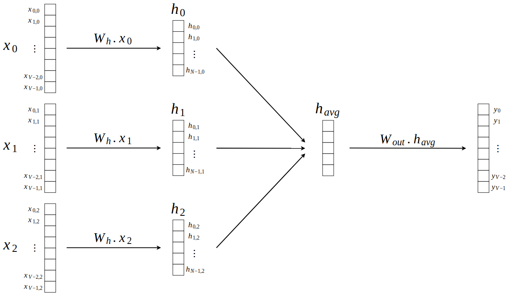
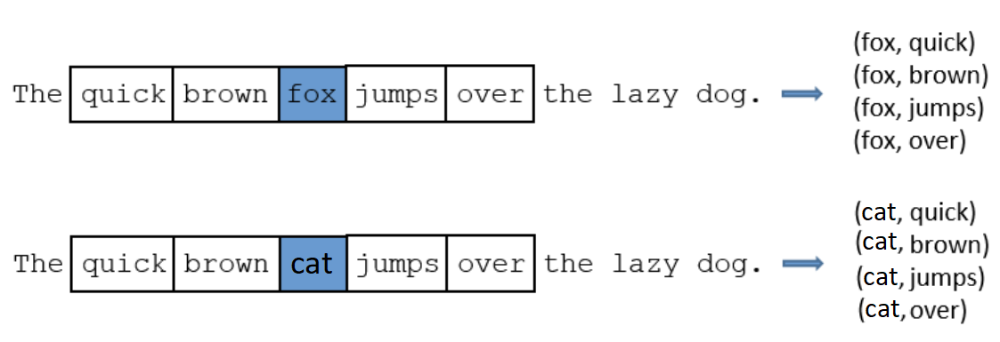
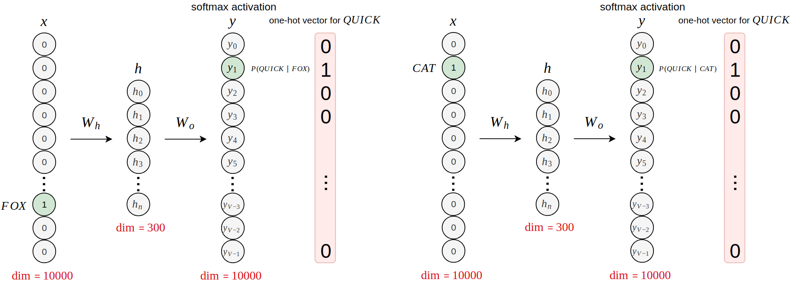
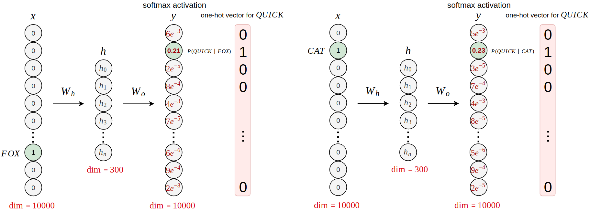
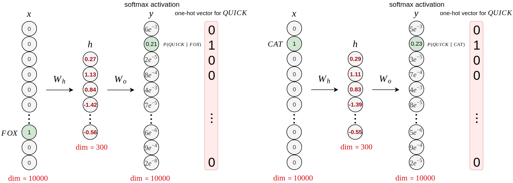
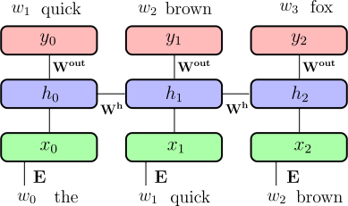
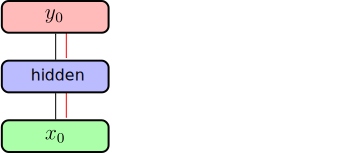

class: center, middle # Deep Learning for Natural Language Processing Guillaume Ligner - Côme Arvis .center[ <img src="images/ece_logo.png" style="width: 300px;" /> ] --- # Fields of application We are going to find out about Natural Language Processing<br/> -- What is it ?<br/> What is it **used for** ? -- .center[<img src="images/fields_application.gif" style="width: 690px;margin-top: 6%" />] --- # What is NLP ? .small90[ - Natural language processing (NLP) = use of human languages by a computer ] -- .small90[ - Computer programs typically read and emit specialized languages among each other - Allows efficient parsing, unambiguous interpretation - Natural human languages are very often ambiguous and cannot be described formally ] -- .small90[ - Natural language processing includes applications such as machine translation - The model reads a sentence in a human language and outputs a **semantically equivalent** sentence in another human language ] -- .small90[ - Many NLP applications are based on language models that define a probability distribution over sequences of words, characters in a natural language ] --- # Some NLP applications - Sentence / Document level classification (topic, sentiment) - Chatbots / dialogue systems / assistants (Alexa, ...) -- - Named Entity Recognition (NER) -- - Translation -- - Summarization -- - Natural Language Generation (NLG) --- # Representation of words .small80[ - We already saw that thanks to convolutions we were able to map an image to a vector that relates to statistically interesting concepts extracted from the image ] -- .small80[ - Those concepts and this representation of images are interesting in a way that they are statistically connected to many different classes and thus generalize well to many computer vision tasks ] -- .small80[ - We would like to find something **similar for words**: a representation of words that encode some semantic concepts and generalize well to a large panel of NLP tasks ] .small80[ - Only there is a big difference since contrary to an image a word doesn't encode much sense in itself - The characters that make the word do not encode so much meaning about the word. Instead the sentence, the **context** in which the word is used conveys much information about the word. - Just like when you're unsure about the exact meaning of a word but have the intuition it is well suited to a sentence ] .small80[ - In a nutshell, how can we represent words efficiently? ] --- # Representation of words .big110[ **One-hot encoding of the words** ] .small90[ - Each word $w_i$ $\in$ vocabulary $\mathbb{V}$ and is mapped to a one-hot vector - vector typically has $0$s everywhere but a $1$ at index $i$ ] -- .small90[ - Vectors are very sparse, of size $\mid\mathbb{V}\mid$, which is the size of the vocabulary ] -- .small90[ - **Big issue**: any two different words have the same Euclidian distance from each other - Euclidian distance is $\sqrt{2}$ - All vector-words are orthogonal to each other - Thus difficult to leverage information about how semantically connected $2$ words are from this representation ] --- # Representation of words .big110[ **Mapping to classes** ] .small90[ - Introduces the notion of word categories ] -- .small90[ - A clustering algorithm partitions the words into categories - Based on co-occurrences of words with other words - Words are mapped to their word category ] -- .small90[ - Allows to share some statistical strength - A word replacing another of same category in a sentence won't change the sentence representation ] -- .small90[ - **Issue**: two different words in the same category are not seen as different - Much information lost ] --- # Representation of words .big110[ **Distributed representation of words** ] .small90[ - Words are mapped to dense vectors like $(1.4,-0.5,...,7)$ ] -- .small90[ - Allows to avoid dimensionality issue of the representation - Can represent as many words as required with a few dimensions ] -- .small90[ - Allows to recognize that two words are semantically similar without losing the ability to encode each word as distinct from the other - By mapping them to distinct dense vectors - Word-vectors that appear in the same contexts have a small Euclidian distance between them ] --- # Representation of words .big110[ **Distributed representation of words** ] .small90[ - Words vectors share some statistical strength between one another - Model will output similar results for words that share many features in dense vectors - We sometimes call these word representations **word embeddings** ] .center[ ] --- # Supervised Text Classification - Text classification is a core problem to many applications - Spam detection - Topic classification - Sentiment analysis - Smart replies -- - The goal of text classification is to assign documents (such as emails, posts, text messages, product reviews, etc...) to one or multiple categories - Such categories can be review scores - Spam v.s. non-spam - The language in which the document was typed - $\cdots$ --- # Supervised Text Classification .center[ ] .left-column50[$\mathbf{E}$ embedding (linear projection)] .right-column40.firebrick[$|\mathbb{V}| \times H$] <br/> .left-column50[Embeddings are averaged] .right-column40.firebrick[$H$] <br/> .left-column50[Dense output connection $\mathbf{W}, \mathbf{b}$] .right-column40.firebrick[$H \times K$] <br/> .left-column50[Softmax and **cross-entropy** loss] .right-column40.firebrick[$K$] --- # Supervised Text Classification .center[ ] - Very efficient (**speed** and **accuracy**) on large datasets - State-of-the-art (or close to) on several classification, when adding **bigrams/trigrams** - Little gains from depth --- # Transfer Learning for text .small90[ - How can we find a representation of words whose features will generalize well to a large panel of nlp tasks ? ] -- .small90[ - To achieve this we use **unsupervised** / **self-supervised** learning of word representations - Use a part of the object's structure to predict some other part of that object's structure - No need for labelled data ] -- .small90[ - Convenient since **unlabelled** text data is almost infinite: - Wikipedia dumps - Project Gutenberg - Social Networks - Common Crawl - $\cdots$ ] --- # Self-supervised learning for text Distributional Hypothesis (Zellig Harris, 1954): .center[ *"Words are characterised by the company that they keep"* ] .small90[ - Main idea: learning a word embedding by learning to predict the words around this word in sentences</br> → Learn to predict **words' contexts** ] -- .small90[ - Given a word e.g. "carrot" and any other word $w \in \mathbb{V}$, learn to predict probability $P(w|\text{carrot})$ that $w$ occurs in the context of “carrot” ] -- .small90[ - Self-supervised: no need for class labels ] .small90[ - For text it consists of predicting the **context** (words around another word) ] .small90[ - Requires a lot of text data to cover rare words correctly though ] --- # Self-supervised learning for text Let's see an example of $2$ words that are semantically equivalent, e.g. "*begin*" and "*start*": .small90[ - Those $2$ words end up with same words around them most of the time ] .small90[ - Thus distributions $P(w_i|$*begin*$)$ and $P(w_i|$*start*$)$ should be almost the same ] -- .small90[ - To make this possible, embeddings of "*begin*" and "*start*" end-up being almost the same ] .small90[ - That means they end-up with a **small Euclidian distance** between them ] --- # Word2vec .small90[ - Word2vec is a group of models used to produce word embeddings - Shallow models (2-layer neural networks only), trained to predict contexts of words ] -- .small90[ - Word2vec models take as input large corpora of text and produce an embedding space i.e. a representation space - Each word in vocabulary $\mathbb{V}$ is mapped to an **embedding vector** - Embedding vector of several hundred dimensions usually ] -- .small90[ - Words in input corpus that appear in same contexts will be close in vector space (distributional hypothesis) ] .small90[ - Word2vec comes in with two approaches to tackle the representation problem: - Continuous Bag of Words (CBOW) approach - Skip-gram approach ] --- # Word2vec: CBOW .small90[ - CBOW: representing the context as **Continuous Bag-of-Word** ] .small90[ - Self-supervision from large unlabeled corpus of text: slide over an **anchor word** and its **context** ] .small90[ - Use **Negative Sampling**: sample negative words at random instead of computing the full softmax ] .center[ ] --- # Word2vec: CBOW .small90[ A CBoW Word2vec example with .big110[**$3$**] words as context: the one-hot encoded vectors $x_0$, $x_1$ and $x_2$ ] .center[  ] --- # Word2vec: CBOW .small90[ Looking at previous example: ] .small90[ - Consider first word $w_0$ is firstly one-hot encoded: - Mapped to a vector of $0s$ everywhere but at its index. Let's say index $0$ ] .small90[ - $h_0$ of shape $(H,1)$ is the embedding representation of the first word $w_0$ ] -- .small90[ - Since $h_0 = W_0 \cdot x_0$ and $x_0$ one-hot encoded, $h_0$ representation of $W_0$ is also the first column ($W_0$'s $0$ indexed column) of $W_0$ ] .small90[ - $W_0 \in \mathbb{R}^{H \times V}$ is the embedding matrix of the words - Each column at index $i$ is the representation of word $i$ in $\mathbb{V}$ ] --- # Word2vec: Skip Gram <br/> .center[ <img src="images/word2vec_skipgram.svg" style="width: 500px;margin-bottom: 5%;" /> ] .small90[ - Given the central word, predict occurence of other words in its context ] .small90[ - Widely used in practice ] .small90[ - Again **Negative Sampling** is used as a cheaper alternative to full softmax. ] .small90[ - Large impact of **context size** hyperparameter ] --- # Word2vec: Skip Gram Let's see Skip Gram through an example -- .center[ <img src="images/skip_gram_example_input.png" style="width: 600px;margin-top: 1%" /> ] - Network is going to learn the statistics from the number of times each pairing shows up --- # Word2vec: Skip Gram .small90[ Here’s the architecture of our neural network: - Vocabulary has $10 000$ words and we want $300$ dimensional representation vectors - Thus weight matrix $W_h$ (that leads to hidden layer) $\in \mathbb{R}^{10000 \times 300}$ ] .center[ ] --- # Word2vec: Skip Gram .small90[ From previous example: ] .small90[ - No activation function on the hidden layer neurons - The output neurons, on the other hand, use softmax ] .small90[ - Hidden layer is actually our representation vector, the embedding vector - We will see why it has the properties we want later ] -- .small90[ - Similarly to CBoW, since $\underset{(1,300)}{h} = \underset{(1,10000)}{x} \times \underset{(10000,300)}{W_h}$ and $x$ is one-hot encoded, $h$ is actually the $i^{th}$ line in hidden weight matrix $W_h$, $i$ being the non-zero index element in $x$ ] .left-column70[ <img src="images/matrix_mult_w_one_hot.png" style="width: 500px;margin-top: 2%" /> ] .right-column30.small80[ - Effect of multiplying a one-hot encoded vector by a matrix - It just selects the matrix row at the $1$'s index ] --- # Word2vec: Skip Gram .small90[ Intuition of why it works: .center[  ] <br/> - $2$ words semantically similar have similar "contexts" (words around them) ] --- # Word2vec: Skip Gram .small90[ Intuition of why it works: .center[  ] <br/> - $2$ words semantically similar have similar "contexts" (words around them)<br/><br/> - Those $2$ words have been trained to output the same words (the same one-hot encoded vectors) ] --- # Word2vec: Skip Gram .small90[ Intuition of why it works: .center[  ] <br/> - Thus, post training, those $2$ words, as inputs, lead to similar softmax distributions of words around them as outputs ] --- # Word2vec: Skip Gram .small90[ Intuition of why it works: .center[  ] <br/> - Thus, post training, those $2$ words, as inputs, lead to similar softmax distributions of words around them as outputs<br/><br/> - For the outputs to be very similar the $2$ hidden layers must be very similar ] --- # Word2vec: Skip Gram .small90[ Intuition of why it works: .center[ ] <br/> - Thus **words with similar contexts end-up having similar hidden layers**<br/><br/> - .firebrick[Hidden layer can be used as representation vector] ] --- # Word2vec: CBoW vs Skip Gram - CBoW turns out to be a useful thing for smaller datasets<br/><br/> -- - Skip-gram, by treating each context-target pair as a new observation, tends to do better when we have larger datasets<br/><br/> -- - Both benefit from using negative-sampling: - In addition to the classic positive examples in the training set, negative examples are provided - Negative examples are wrong inputs for which no outputs can be determined - Negative examples should produce a one-hot encoded vector of all $0$s --- # Word vectors with t-SNE .center[ <img src="images/tsne_words.png" style="width: 750px;" /> ] --- # Word vectors arithmetic ### Similarities .center[ <img src="images/most_sim.png" style="width: 500px;margin-bottom: 5%" /> ] ### Compositionality .center[ <img src="images/sum_wv.png" style="width: 700px;" /> ] --- # Word analogies .center[ ] - Linear relations in Word2vec embeddings - Many come from text structure (e.g. Wikipedia) --- # Recurrent Neural Network .center[ <img src="images/rnn_simple.svg" style="width: 200px;" /> ] -- .small90[ <br/> Unfold the previous recurrent structure over a sequence $(x_0, x_1, x_2)$: ] <br/> .center[ ] --- # Recurrent Neural Network .center[ <img src="images/rnn_simple.svg" style="width: 200px;" /> ] .small90[ <br/> Unfold the previous recurrent structure over a sequence $(x_0, x_1, x_2)$: ] <br/> .center[ <img src="images/unrolled_rnn_2.svg" style="width: 400px;" /> ] --- # Recurrent Neural Network .center[ <img src="images/rnn_simple.svg" style="width: 200px;" /> ] .small90[ <br/> Unfold the previous recurrent structure over a sequence $(x_0, x_1, x_2)$: ] <br/> .center[ ] --- # Recurrent Neural Network - Classical example of RNN - Recurrent network with recurrent connections between hidden units - Reads an entire sequence, then produces a single output .center[ ] --- # Recurrent Neural Network for Language Modelling .center[  ] .small90[ **input** $(w\_0, w\_1, ..., w\_t)$ sequence of words ($1$-hot encoded)<br/> - Sequentially perform operations - Introduce a new word at each new operation and predict the word ahead in sentence **output** $(w\_1, w\_2, ..., w\_{t+1})$: $1$ step ahead shifted sequence of words ($1$-hot encoded) ] --- # Recurrent Neural Network for Language Modelling .center[ ] $x\_t = \text{Emb}(w\_t) = \mathbf{E} w\_t$ .right-column50[input projection .firebrick[$H$]] $h\_t = g(\mathbf{W^h} h\_{t-1} + x\_t + b^h)$ .right-column50[recurrent connection .firebrick[$H$]] $y = \text{softmax}( \mathbf{W^{out}} h\_t + b^o )$ .right-column50[output projection .firebrick[$K = |V|$]] --- # Recurrent Neural Network for Language Modelling .center[ ] .small80[ Param sharing of $W^h, W^{out}, b^h \text{ and } b^o$ - Allows to apply the model to varying length sequences - Also allows to generalize across similar inputs at different timesteps ] -- .small80[ In case of separate parameters at each time index value - No generalization to sequence lengths not seen during training - Also no sharing statistical strength across different sequence lengths and across different positions in time ] [//]: # (C'est quoi cette slide ? Ça reprend beaucoup le schéma d'avant mais les dims sont changées ? Avec des embeddings ? Pas compris) [//]: # (# Recurrent Neural Network) [//]: # (.center[]) [//]: # (Input embedding $\mathbf{E}$ .right-column20[.firebrick[$|V| \times H$]]) [//]: # (Recurrent weights $\mathbf{W^h}$ .right-column20[.firebrick[$H \times H$]]) [//]: # (Output weights $\mathbf{W^{out}}$ .right-column20[ .firebrick[$H \times K = H \times |V|$]]) --- # Backpropagation through time Similar as standard backpropagation on unrolled network .center[  ] --- # Backpropagation through time Similar as standard backpropagation on unrolled network .center[ <img src="images/unrolled_rnn_backwards_2.svg" style="width: 400px;" /> ] --- # Backpropagation through time Similar as standard backpropagation on unrolled network .center[ ] -- - Similar as training **very deep networks** with tied parameters - Example between $x_0$ and $y_2$: $W^h$ is used twice -- - Usually truncate the backprop after $T$ timesteps - Difficulties to train long-term dependencies --- # Vanishing and exploding gradient problems - Recurrent Neural Networks can be seen as **deep computational graphs** that repeatedly apply the same set of operations at each time step of a **long temporal sequence** .small80[ - For example, suppose that the network contains a path that consists in repeatedly multiplying by a matrix $\mathbf{W}$ - After t steps, this is equivalent to multiplying by $\mathbf{W}^t$ - If $W$ has an eigendecomposition then: $\mathbf{W}^t = (\mathbf{V}diag(\mathbf{\lambda})\mathbf{V}^{-1})^t = \mathbf{V}diag(\mathbf{\lambda})^t\mathbf{V}^{-1}$ - So, any eigenvalues $\lambda_i$ will vanish if they are less than 1 in magnitude, or inversely explode if they are greater than 1 in magnitude ] - This phenomena also occurs during the backprop, leading to vanishing or exploding gradients, which makes it difficult to learn **long-term dependencies** --- # Long Short-Term Memory networks (LSTM) .small75[ - Particular kind of RNN, now widely used in industry, specialy designed to tackle vanishing and exploding gradients issues - The key feature here is the cell state $C_t$: a horizontal path with only some minor linear interactions, which make long-term dependencies possible by letting the information flows ] .center[ ] .left-column50.center[ Standard RNN cell ] .right-column50.center[ LSTM cell ] --- # LSTM in detail .center[ ] .center[ $f\_t = \sigma(W\_f \cdot [h\_{t-1}, x\_t] + b\_f)$ ] .small85[ - The **forget gate layer**: will quantify the proportion of the previous cell state $C_{t-1}$ to keep - Basically, this gate allows the LSTM to forget the information that is no longer required to understand things (a pronoun in a sentence for instance) ] --- # LSTM in detail .center[ ] .center[ $i\_t = \sigma(W\_f \cdot [h\_{t-1}, x\_t] + b\_i)$</br> $\tilde{C}\_t = tanh(W\_C \cdot [h\_{t-1}, x\_t] + b\_C)$ ] .small80[ - The **input gate layer**: decides which values to update - The **candidate layer**: generates new candidate values to be added to the current state Those parts are responsible for the selection and the addition of information to the cell state ] --- # LSTM in detail .center[ ] .center[ $C\_t = f\_t \odot C\_{t-1} + i\_t \odot \tilde{C}$ ] .small85[ - Actual cell state update: - we do an element-wise product between the old state and $f_t$ - then we add the new candidate values $i\_t \odot \tilde{C}$ ] --- # LSTM in detail .center[ ] .center[ $o\_t = \sigma(W\_o \cdot [h\_{t-1}, x\_t] + b\_o)$</br> $h\_t = o\_t \odot tanh(C_t)$ ] .small85[ - The **output gate layer**: will retrieve the useful information by doing an element-wise product between the output and the squashed cell state ] --- # LSTM cell in pseudo-code Description of a LSTM cell with pseudo-code </br></br> .center[ Four gates corresponding to trainable layers ] --- # Gated Recurrent Unit (GRU) - Similar idea as LSTM that also tackle vanishing gradient problems - Fewer gates and then fewer parameters: GRU is only using a reset gate and an update gate - No cell state here - No free lunch between LSTM and GRU: one or the other might be best suited to a given task but not systematically